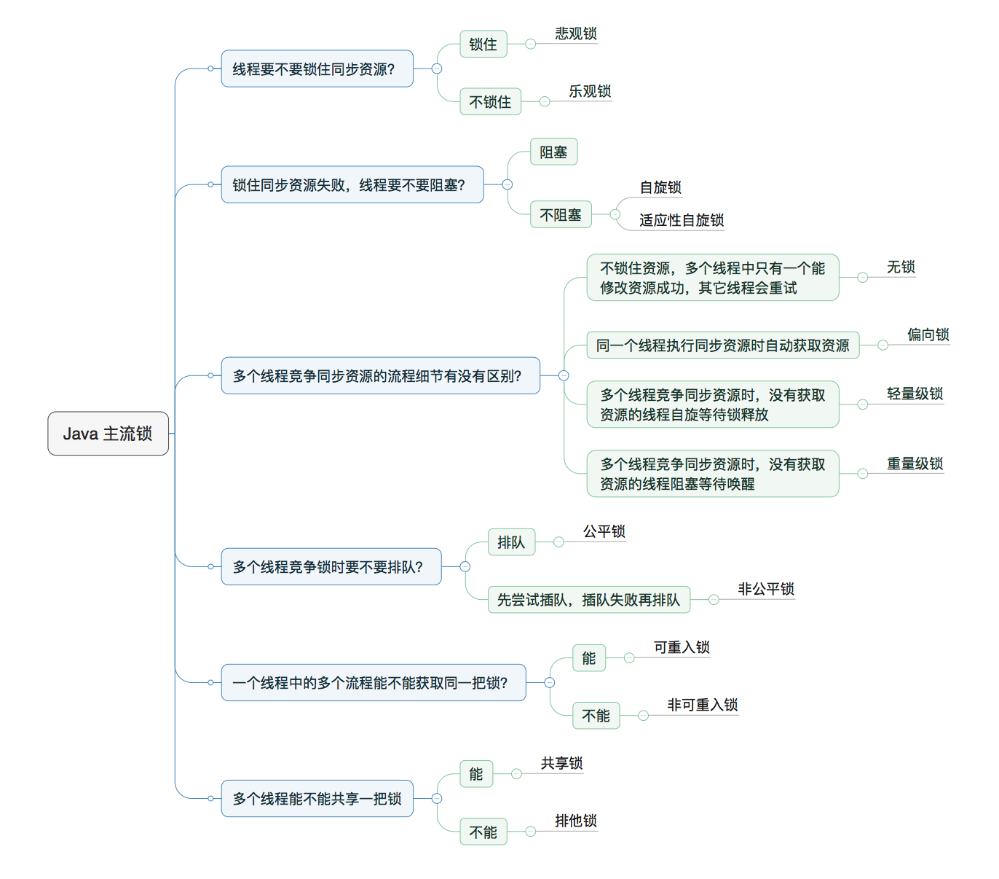

Java 并发 - 常用同步器
- ReentrantLock
- Semaphore
- ReentrantReadWriteLock
- StampedLock
- CountDownLatch
- CyclicBarrier
- Exchanger
- 死锁
- 小结
- 参考
ReentrantLock
synchronized 关键字解决了同步和互斥问题。并发包通过 Lock 来解决互斥问题，Condition 来解决同步问题。
那么既然有了 synchronized 为什么还需要 Lock 库呢。想象一个情景：如果一个线程持有 A 锁，并且想获得 B 锁，那么线程就进入了阻塞状态，这时一旦死锁就没有任何机会唤醒阻塞的线程了，我们希望可以破坏死锁中的不可抢占条件：
- 响应中断，线程可以响应中断信号那么线程便有机会释放 A 锁。
- 支持超时，线程在一段时间内没有获取到锁，不进入阻塞而返回一个超时错误，这样线程也有机会释放锁。
- 公平锁，可以在构造方法中指明公平锁。
- 对个锁，可以使用 Condition 来更细粒度的锁控制。
Lock 库了支持了这几个方案。
// 支持中断的 API
void lockInterruptibly()
throws InterruptedException;
// 支持超时的 API
boolean tryLock(long time, TimeUnit unit)
throws InterruptedException;
// 支持非阻塞获取锁的 API
boolean tryLock();
其他的一些 API
lock() // 阻塞地获取锁
unlock() //
isLock() // 锁是否被占用
getQueueLength() // 获取等待队列长度
Condition newCondition() // 条件对象
isFair() // 是否是公平锁
使用
一般使用
class X {
private final Lock rtl = new ReentrantLock();
int value;
public void addOne() {
// 获取锁
rtl.lock();
try {
value+=1;
} finally {
// 保证锁能释放
rtl.unlock();
}
}
}
配合条件变量来实现一个阻塞队列。这里需要两个条件变量，一个是队列不为空，空列不允许出队，一个是队列不满，队列已满不允许入队。
public class BlockedQueue<T>{
final Lock lock = new ReentrantLock();
// 条件变量：队列不满
final Condition notFull = lock.newCondition();
// 条件变量：队列不空
final Condition notEmpty = lock.newCondition();
// 入队
void enq(T x) {
lock.lock();
try {
while (队列已满)
// 等待队列不满
notFull.await(); // 相当于 wait()
// 省略入队操作...
// 入队后, 通知可出队
notEmpty.signal(); // 相当于notifyAll()
}finally {
lock.unlock();
}
}
// 出队
void deq(){
lock.lock();
try {
while (队列已空)
// 等待队列不空
notEmpty.await();
// 省略出队操作...
// 出队后，通知可入队
notFull.signal();
}finally {
lock.unlock();
}
}
}
注意 await(), signal(), signalAll() 和 wait(), notify(), notifyAll() 的语义是相同的。但是后者只能在 synchronized 中使用。
性质
可重入性 即：线程可以重复获得同一把锁。
如下代码所示，当线程执行到 1 处时如果已经获得了锁 rtl 那么当 1 处调用 get() 方法时，会在 2 处再次加锁，如果锁是可以重入的，那么便会自动获得锁。否则会被阻塞。
在 AQS 的实现中，线程获得锁会记录线程的 ID 来实现重入性。
class X {
private final Lock rtl = new ReentrantLock();
int value;
public int get() {
// 获取锁
rtl.lock(); // 2
try {
return value;
} finally {
// 保证锁能释放
rtl.unlock();
}
}
public void addOne() {
// 获取锁
rtl.lock();
try {
value = 1 + get(); // 1
} finally {
// 保证锁能释放
rtl.unlock();
}
}
}
同样的，还有可重入函数，指的是多个线程可以同时调用该函数，每个线程都可以获得正确的结果。即可重入函数是线程安全的。
公平性即唤醒锁的阻塞队列中的线程是顺序的。
在使用 ReentrantLock 时可以传入一个 fair 参数，默认是公平锁。非公平锁效率高但是会导致饥饿现象。
在 AQS 的实现中，公平性是通过锁时判断同步队列中是否有前驱节点来实现的。
// 无参构造函数：默认非公平锁
public ReentrantLock() {
sync = new NonfairSync();
}
// 根据公平策略参数创建锁
public ReentrantLock(boolean fair){
sync = fair ? new FairSync()
: new NonfairSync();
}
Semaphore
信号量本质上是一个共享锁，用 AQS 中的状态变量维护资源数量，保证被线程访问的数量。如果超过了这个数量，请求就会被阻塞。这种性质可以用于构建一些资源池对象，比如数据库连接池。
其中使用:
acquire()获得锁release()使用锁
ReentrantReadWriteLock
读写所允许同一时刻被多个读线程访问，但是在写线程访问时，所有的读线程和其他的写线程都会被阻塞。
也就是说写锁是独占锁，读锁是共享锁。
主要理解两个问题，：
- 如何记录线程的读写状态
- 用位操作将状态变量分为两半，一半表示读状态一半表示写状态。
- 锁降级
- 按照1. 获得写锁，2. 获得读锁，3. 释放写锁 的顺序可以将写锁降级为读锁。
StampedLock
StampedLock 是一个改良版的 ReentrantReadWriteLock。一般的多线程情况下，读的情况远远大于写的情况。所以写操作可能会存在饥饿现象。
StampedLock 的优化方法如下：
- 读锁不会阻塞写锁。
- 如果读时发生了写操作，那么就重读。
- 重读操作使用了乐观锁。
- 如果多次重读再上读锁。
CountDownLatch
CountDownLatch 即倒计时器。它允许一个线程或多个线程一直等待，知道其他线程完成操作后继续执行。
CountDownLatch(threadCount)初始化线程数量。coundownlatch.await()让主线程阻塞直到其他线程完成操作。
CyclicBarrier
CyclicBarrier 实现了让一些线程达到阻塞在同一个同步点，当所有线程都被阻塞时才会继续允许。
CyclicBarrier(int parties)构造方法确定拦截的线程数量。await()表现线程已经到达了同步点。
CountDownLatch 和 CyclicBarrier 有点像起点和终点的关系，前者是的线程从同一个起点开始运行，后者使得线程都阻塞在同一个点。
Exchanger
Exchanger 用于线程间的信息交换，它提供了一个同步点使得线程能够在这个同步点阻塞并交换信息。
死锁
概念
死锁需要同时满足以下四个条件：
- 资源互斥：共享资源 X 和 Y 只能被一个线程占用。
- 占用且等待：线程 T1 取得 X ，在等待 Y 的同时不释放 X。
- 不可抢占：其他线程不能抢占 T1 占有的资源。
- 循环等待：T1 等待 T2占有的资源，T2 也等待 T1 占有的资源。
死锁情况
锁顺序死锁
public class LeftRightDeadlock {
private final Object left = new Object();
private final Object right = new Object();
public void leftRight() {
// 得到left锁
synchronized (left) {
// 得到right锁
synchronized (right) {
doSomething();
}
}
}
public void rightLeft() {
// 得到right锁
synchronized (right) {
// 得到left锁
synchronized (left) {
doSomethingElse();
}
}
}
}
回归刚才那四个条件，很容易看出来如果有两个线程 A 和 B 交错执行：
- A 得到了 right 锁，等待 left 锁。
- 同时 B 得到 left 锁 等到 right 锁。
- 循环等待，死锁。
动态锁顺序死锁
// 转账
public static void transferMoney(Account fromAccount,
Account toAccount,
DollarAmount amount)
throws InsufficientFundsException {
// 锁定汇账账户
synchronized (fromAccount) {
// 锁定来账账户
synchronized (toAccount) {
// 判余额是否大于0
if (fromAccount.getBalance().compareTo(amount) < 0) {
throw new InsufficientFundsException();
} else {
// 汇账账户减钱
fromAccount.debit(amount);
// 来账账户增钱
toAccount.credit(amount);
}
}
}
}
///// 如果 A，B 线程同时执行
A:transferMoney(myAccount,yourAccount,10);
B:transferMoney(yourAccount,myAccount,20);
还是回顾死锁的四个条件：
- 如果两个线程同时调用transferMoney()
- 线程A从X账户向Y账户转账，线程B从账户Y向账户X转账
- 相互抢占，循环等待，死锁。
协作对象之间发生死锁
public class CooperatingDeadlock {
// Warning: deadlock-prone!
class Taxi {
@GuardedBy("this") private Point location, destination;
private final Dispatcher dispatcher;
public Taxi(Dispatcher dispatcher) {
this.dispatcher = dispatcher;
}
public synchronized Point getLocation() {
return location;
}
// setLocation 需要Taxi内置锁
public synchronized void setLocation(Point location) {
this.location = location;
if (location.equals(destination))
// 调用notifyAvailable()需要Dispatcher内置锁
dispatcher.notifyAvailable(this);
}
public synchronized Point getDestination() {
return destination;
}
public synchronized void setDestination(Point destination) {
this.destination = destination;
}
}
class Dispatcher {
@GuardedBy("this") private final Set<Taxi> taxis;
@GuardedBy("this") private final Set<Taxi> availableTaxis;
public Dispatcher() {
taxis = new HashSet<Taxi>();
availableTaxis = new HashSet<Taxi>();
}
public synchronized void notifyAvailable(Taxi taxi) {
availableTaxis.add(taxi);
}
// 调用getImage()需要Dispatcher内置锁
public synchronized Image getImage() {
Image image = new Image();
for (Taxi t : taxis)
// 调用getLocation()需要Taxi内置锁
image.drawMarker(t.getLocation());
return image;
}
}
class Image {
public void drawMarker(Point p) {
}
}
}
同理： getImage() 和 setLocation(Point location) 都需要获得两个锁且获取途中不释放锁。
避免死锁
- 固定加锁顺序
- 开发调用
- 使用定时锁
固定锁顺序避免死锁
public class InduceLockOrder {
// 额外的锁、避免两个对象hash值相等的情况(即使很少)
private static final Object tieLock = new Object();
public void transferMoney(final Account fromAcct,
final Account toAcct,
final DollarAmount amount)
throws InsufficientFundsException {
class Helper {
public void transfer() throws InsufficientFundsException {
if (fromAcct.getBalance().compareTo(amount) < 0)
throw new InsufficientFundsException();
else {
fromAcct.debit(amount);
toAcct.credit(amount);
}
}
}
// 得到锁的hash值
int fromHash = System.identityHashCode(fromAcct);
int toHash = System.identityHashCode(toAcct);
// 根据hash值来上锁
if (fromHash < toHash) {
synchronized (fromAcct) {
synchronized (toAcct) {
new Helper().transfer();
}
}
} else if (fromHash > toHash) {// 根据hash值来上锁
synchronized (toAcct) {
synchronized (fromAcct) {
new Helper().transfer();
}
}
} else {// 额外的锁、避免两个对象hash值相等的情况(即使很少)
synchronized (tieLock) {
synchronized (fromAcct) {
synchronized (toAcct) {
new Helper().transfer();
}
}
}
}
}
}
小结
锁的类型

最佳实践
- 永远只在更新对象成员时加锁。
- 永远只在访问可变成员变量时加锁。
- 永远不在调用其他对象的方法时加锁。
最后一条可能有点难理解：如果你在调用方法前上了锁，那么假设这个方法发生了阻塞就有可能死锁。
总结一句话就是：不要在不该加锁的地方加锁。